Exciting Time to be Doing Large-Scale Scientific Computing
Large scale scientific computing, 1995-2005 (ish):
- ~20 years of stability
- Bunch of x86, MPI, ethernet or infiniband
- No one outside of academia was much doing big number crunching
Jonathan Dursi
Scientific Associate/Software Engineer, Informatics and Biocomputing, OICR
Large scale scientific computing, 1995-2005 (ish):


And this only becomes more pronounced with other trends which make scientific programming harder:
Computational scientists have learned a lot about computer science in the last 20+ years.

But our frameworks are letting us down.
MPI, which has served us very well for >25 years, is 90+% low level.

Programming at that level is worse than just hard.

There have been many projects from within scientific computing that have tried to provide a higher-level approach - most have not been wildly successful.
But new communties are reawakining these efforts with the sucesses they're having with their approaches.
And we know we can have both high performance and higher-level primitives from a parallel library I use pretty routinely.
It's called MPI.
Collective operations - scatter, gather, broadcast, or interleave data from all participating tasks.
Are implemented with:
Make decisions about which to use size of communicator, size of message, etc without researcher intervention.
Can influence choice with implementation-dependant runtime options.
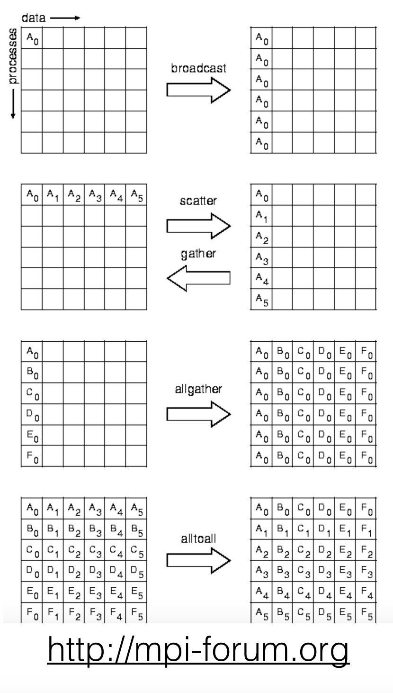
Parallel I/O operations - interacting with a filesystem
Many high-level optimizations possible
Algorithmic decisions made at run time, with researcher only able to issue 'hints' as to behaviour
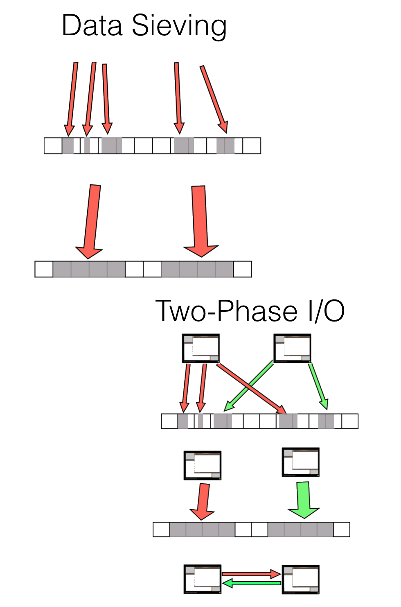
These work extremely well.
Before available, how many researchers had to (poorly) re-implement these things themselves?
Nobody suggests now that researchers re-write them at low level “for best performance”.
Researchers constantly re-implementing mesh data exchanges, distributed-memory tree algorithms, etc. make no more sense.
For the rest of our time together, will introduce you to three technologies - one from within HPC, two from without - that I think have promise:
All of these can be used for some HPC tasks now with the promise of much wider HPC relevance in the coming couple of years.
Chapel was one of several languages funded through DARPA HPCS (High Productivity Computing Systems) project. Successor of ZPL.
A PGAS language with global view; that is, code can be written as if there was only one thread (think OpenMP)
config const m = 1000, alpha = 3.0;
const ProblemSpace = {1..m} dmapped Block({1..m});
var A, B, C: [ProblemSpace] real;
B = 2.0;
C = 3.0;
A = B + C;
$ ./a.out --numLocales=8 --m=50000
Chapel, and ZPL before it:
What distinguishes Chapel from HPL (say) is that it has these maps for other structures - and user can supply domain maps:
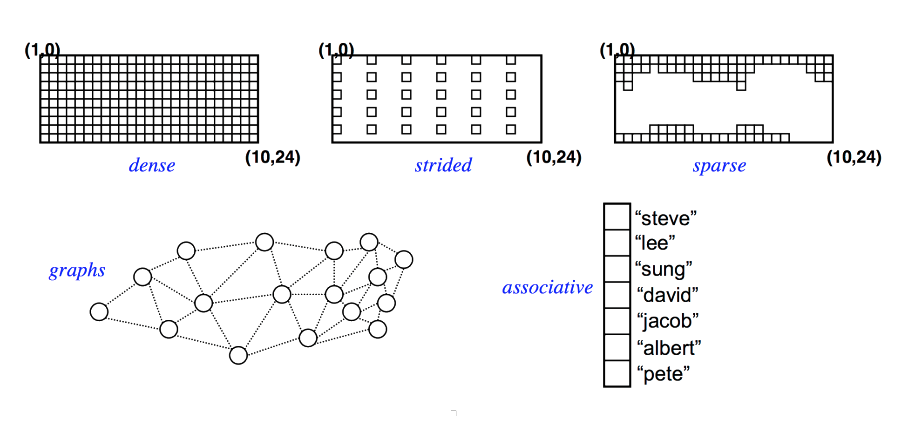
There's a nascent Chapel REPL that you can use to familiarize yourself with the type system, etc,
but you can't do any real work with it yet; it's on the VM as chpl-ipe.
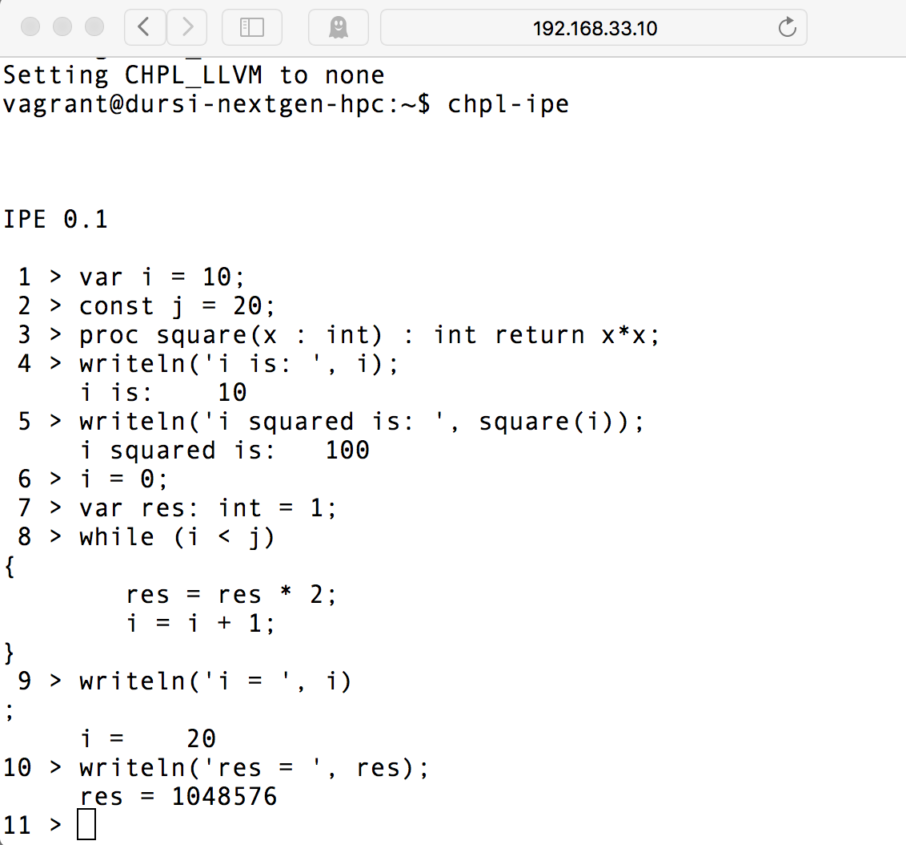
Running the Jacobi example shows a standard stencil-on-regular grid calculation:
$ cd ~/examples/chapel_examples
$ chpl jacobi.chpl -o jacobi
$ ./jacobi
Jacobi computation complete.
Delta is 9.92124e-06 (< epsilon = 1e-05)
# of iterations: 60
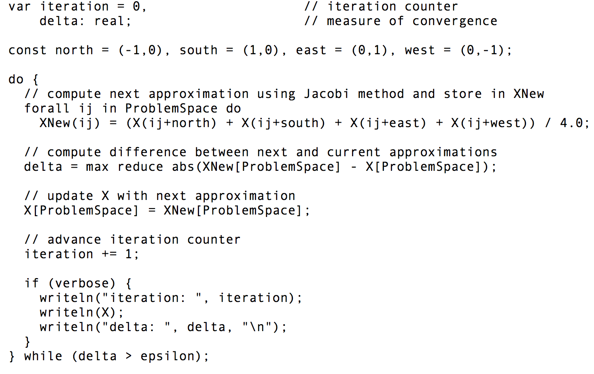
Lots of things do stencils on fixed rectangular grids well; maybe more impressively, Chapel's concurrency primitives allow things like distributed tree walks simply, too:
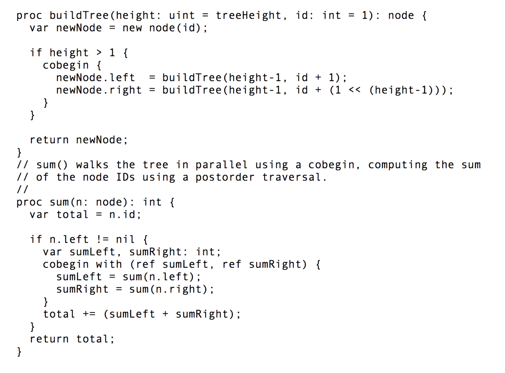
Spark is a "Big Data" technology originally out of the AMPLab at UC Berkeley that is rapidly becoming extremely popular.
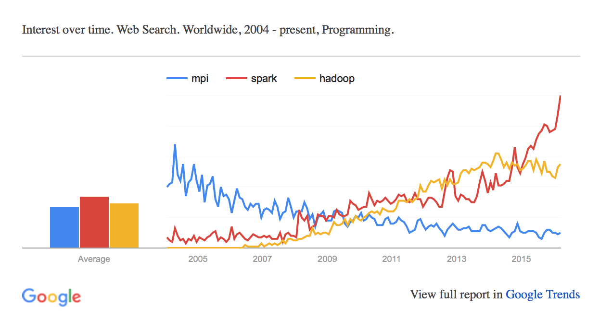
Hadoop came out in ~2006 with MapReduce as a computational engine, which wasn't that useful for scientific computation.
However, the ecosystem flourished, particularly around the Hadoop file system (HDFS) and new databases and processing packages that grew up around it.
Spark is in some ways "post-Hadoop"; it can happily interact with the Hadoop stack but doesn't require it.
Built around concept of resilient distributed datasets
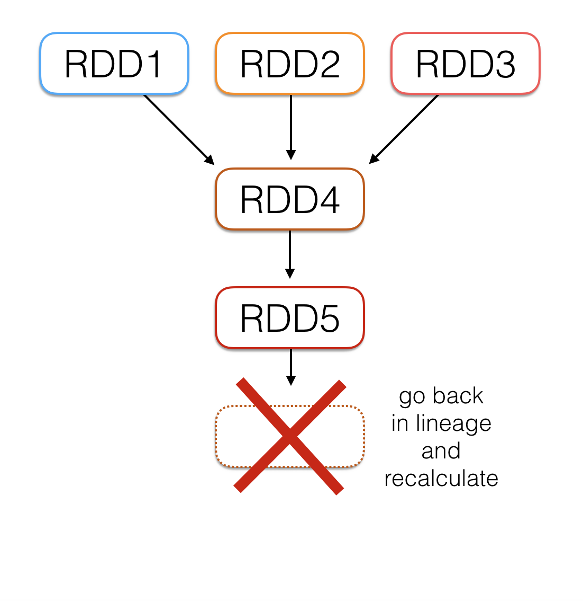
Don't need to justify Spark for those analyzing large emounts of data:
Want to show how close it is to being ready to use for more traditional HPC applications, too, like simulation:
Spark RDDs prove to be a very powerful abstraction.
Key-Value RDDs are a special case - a pair of values, first is key, second is value associated with.
Can easily use join, etc to bring all values associated with a key together:
Linda tuple spaces, which underly Gaussian.
Notebook: Spark 1 - diffusion
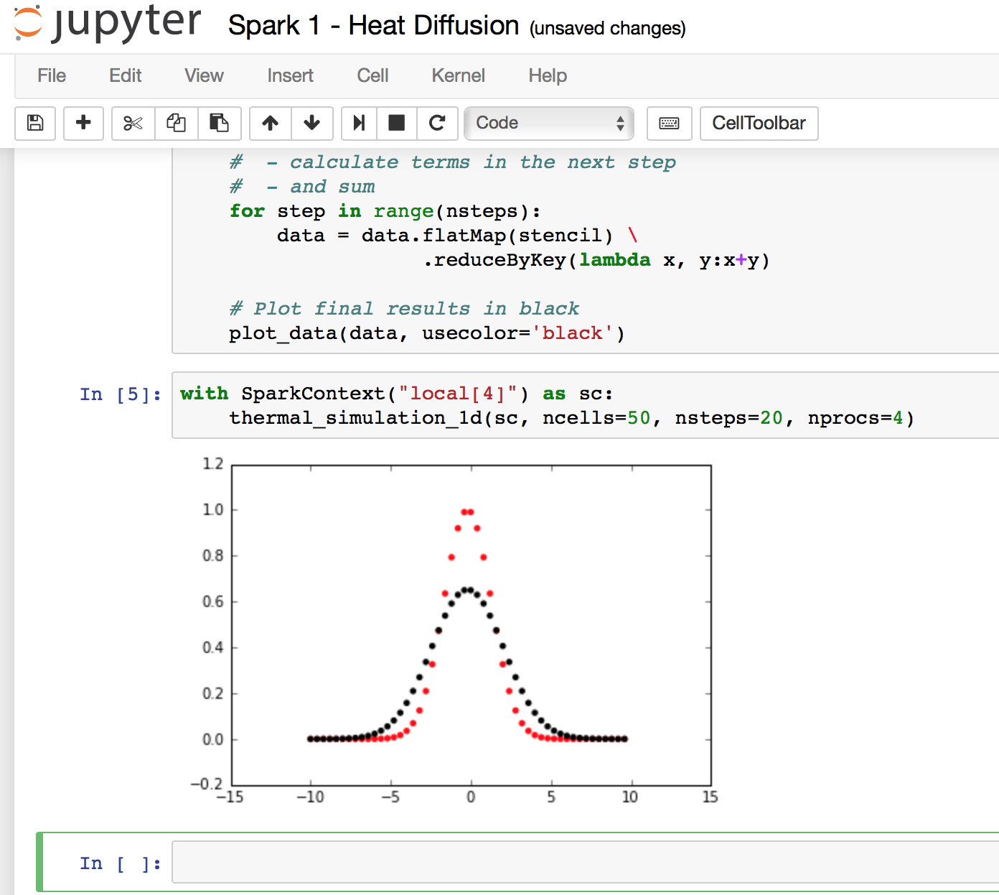
Operations on Spark RDDs can be:
You boild a Spark computation by chaining together operations; but no data starts moving until part of the computation is materialized with an action.
Allows optimizations over the entire computation graph.
So for instance here, nothing starts happening in earnest until the plot_data()
# Main loop: For each iteration,
# - calculate terms in the next step
# - and sum
for step in range(nsteps):
data = data.flatMap(stencil) \
.reduceByKey(lambda x, y:x+y)
# Plot final results in black
plot_data(data, usecolor='black')
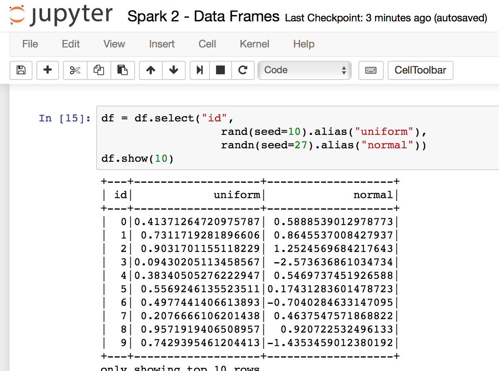
But RDDs are also building blocks.
Spark Data Frames are lists of columns, like pandas or R data frames.
Can use SQL-like queries to perform calculations. But this allows bringing the entire mature machinery of SQL query optimizers to bear, allowing further automated optimization of data movement, and computation.
Notebook: Spark 2 - data frames
Using RDDs, a graph library has also been implemented: GraphX.
Many interesting features, but for us: Pregel-like algorithms on graphs.
Nodes passes messages to their neighbours along edges.
Like MPI (BSP) on unstructured graphs!
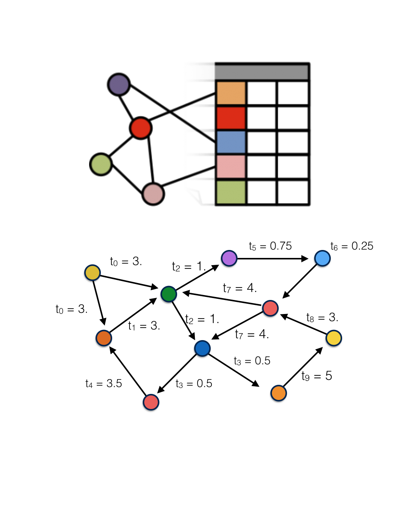
Maddeningly, graph algorithms are not yet fully available from Python - in particular, Pregel.
Can try to mock communications up along edges of an unstructured mesh, but unbelievably slow.
Still, gives a hint what's possible.
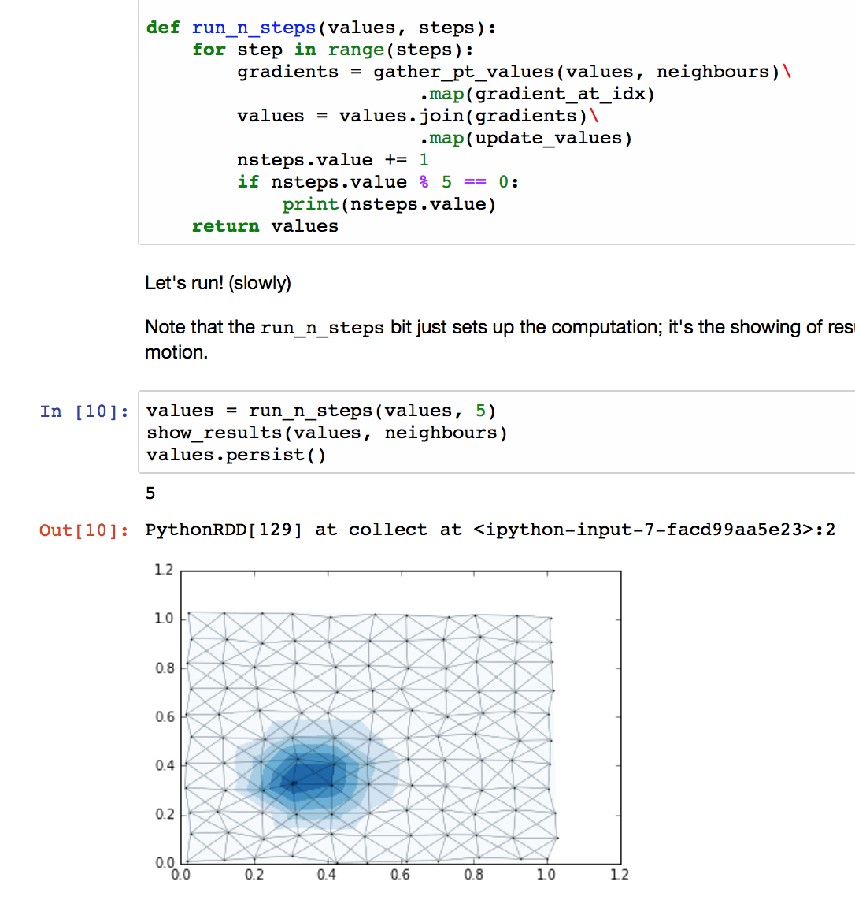
Notebook: Spark 3 - Unstructured Mesh
For data analysis, Spark is already there - like parallel R without the headaches and with a growing level of packages.
Lots of typical statstics + machine learning.
For traditional high performance computing, seems a little funny so far: Scalapack-style distributed block matricies are there, with things like PCA, but not linear solves!
Graph support will enable a lot of really interesting applications (Spark 2.x - this year?)
Very easy to set up a local Spark install on your laptop.
JVM Based (Scala) means C/Python interoperability always fraught.
Not much support for high-performance interconnects (although that's coming from third parties - HiBD group at OSU)
Very little explicit support for multicore yet, which leaves some performance on the ground.
TensorFlow is an open-source dataflow for numerical computation with dataflow graphs, where the data is always in the form of tensors (n-d arrays).
From Google, who uses it for machine learning.
Heavy number crunching, can use GPUs or CPUs, and will distribute tasks of a complex workflow across resources.
(Current version only has initial support for distributed; taking longer to de-google the distributed part than anticipated)
As an example of how a computation is set up, here is a linear regression example.
Linear regression is already built in, and doesn't need to be iterative, but this example is quite general and shows how it works.
Variables are explicitly introduced to the TensorFlow runtime, and a series of transformations on the variables are defined.
When the entire flowgraph is set up, the system can be run.
The integration of tensorflow tensors and numpy arrays is very nice.
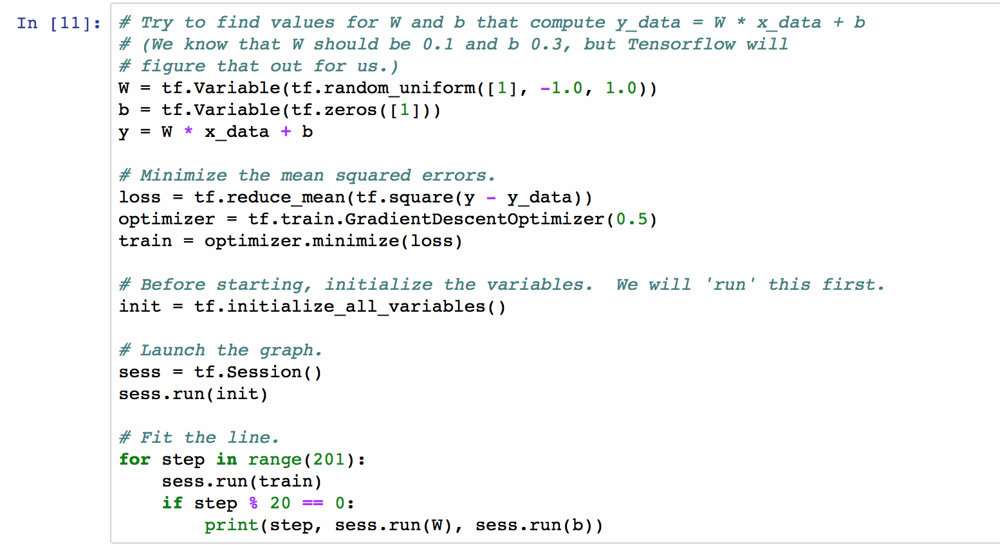 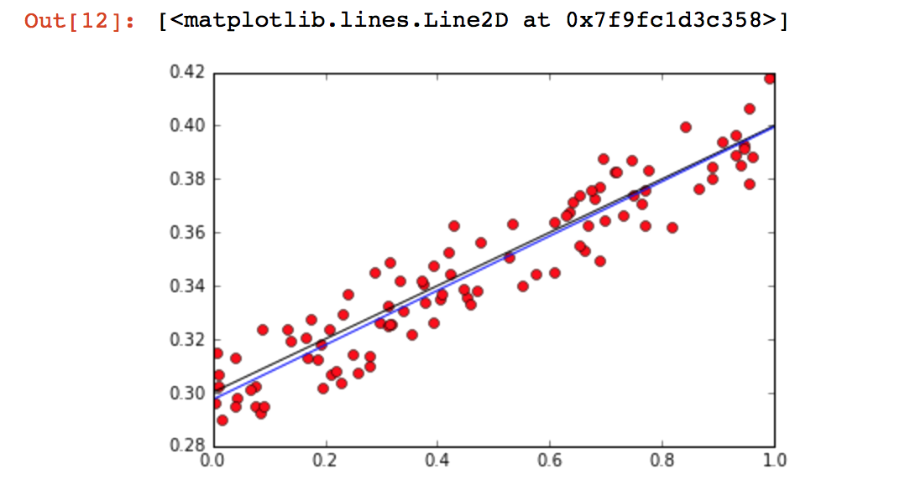
All sorts of computations on regular arrays can be performed.
Some computations can be split across GPUs, or (eventually) even nodes.
All are multi-threaded.
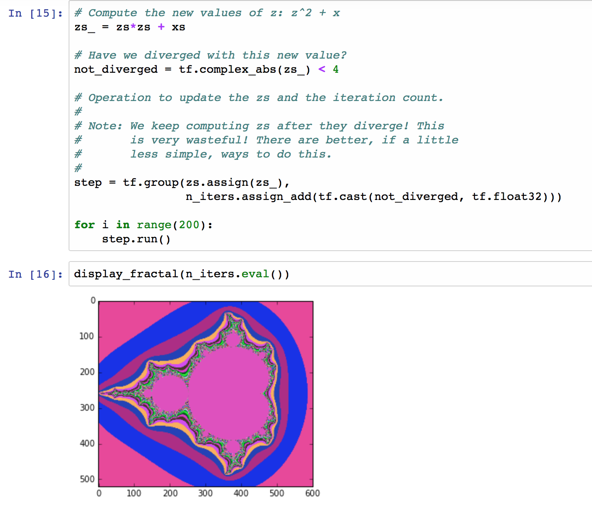
All sorts of computations on regular arrays can be performed.
Some computations can be split across GPUs, or (eventually) even nodes.
All are multi-threaded.
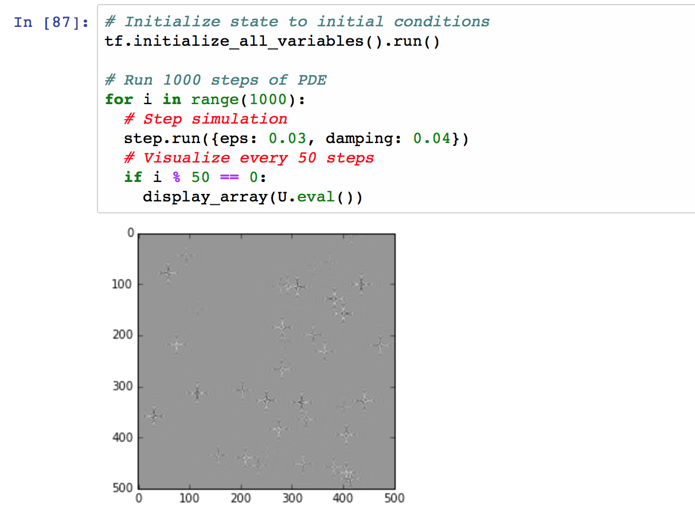
All of the approaches we've seen implicitly or explicitly constructed dataflow graphs to describe where data needs to move.
Then can build optimization on top of that to improve data flow, movement; optimization often leaves room for improvement.
These approaches are extremely promising, and already completely useable at scale for some sorts of tasks.
None will replace MPI yet, but any have the opportunity to make some work much more productive, and reduce time-to-science